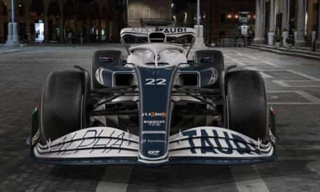

La Scuderia AlphaTauri, nota dal 2006 al 2019 come Scuderia Toro Rosso, è una squadra corse italiana di Formula 1 con sede a Faenza, erede della Minardi dopo l'acquisto da parte dell'azienda austriaca Red Bull. Manager della squadra è l'austriaco Franz Tost. Dal febbraio 2006 al novembre 2008 l'ex pilota austriaco Gerhard Berger, amico di lunga data del patron della Red Bull Dietrich Mateschitz, e uno dei primi testimonial della bevanda energetica, è stato possessore del 50% delle quote della scuderia italiana.
Monoposto 2022
L'AlphaTauri AT03 è una monoposto di Formula 1 costruita dalla Scuderia AlphaTauri per disputare il campionato mondiale di Formula 1 2022. La vettura è stata presentata il 14 febbraio 2022. La livrea della AT03 mantiene la stessa colorazione bianco-blu della sua antenata ma varia il suo schema, infatti rispetto alla AT02 aumenta la presenza del bianco, il quale diventa il colore della base. Dalla parte superiore del muso parte una fascia blu navy — bordata di bianco-blu — che, all'altezza dell'attacco anteriore dell'halo e delle prese d'aria laterali, si divide in due e prosegue lungo le pance fino a toccare il pavimento e per tutta la lunghezza della vettura e infine sulla parte inferiore dell'ala posteriore. Sul cofano motore è riportato in blu il logo dell'AlphaTauri e sulle pance, in bianco, anche il nome della scuderia, scritto in obliquo in modo da seguire la forma della carrozzeria. Dell'ala anteriore gli endplate e il main plane sono blu, mentre i flap sono bianchi. Sugli endplate dell'ala anteriore e sugli specchietti retrovisori sono presenti delle decorazioni che richiamano il tricolore italiano. Dalla livrea scompaiono i loghi dell'ex motorista Honda — in seguito al suo abbandono del circus e al conseguente passaggio come fornitore di power unit a Red Bull Powertrains — ma compaiono quelli della sua suddivisione sportiva Honda Racing Corporation, in quanto sebbene il motorista giapponese non sia più ufficialmente in Formula 1 continuerà comunque a occuparsi dell'assemblaggio dei motori a Sakura per la stagione 2022.